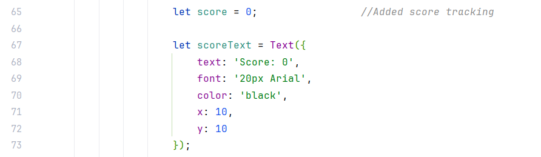
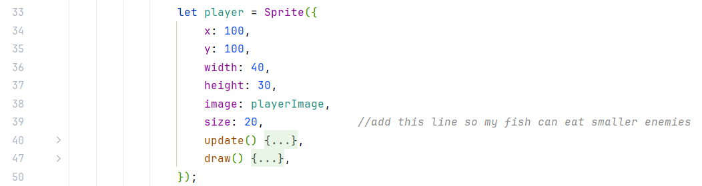
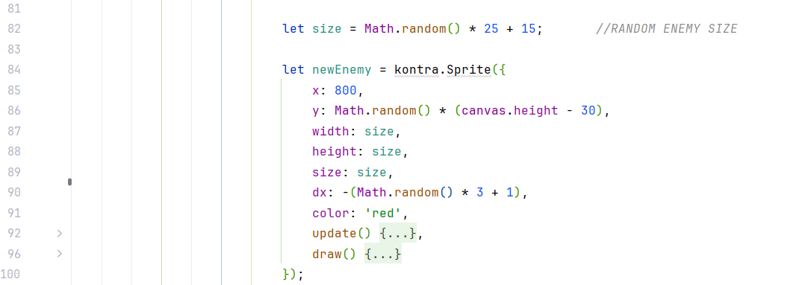
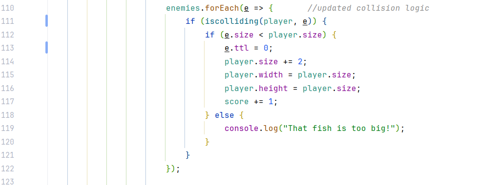
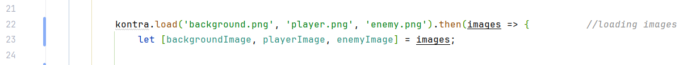
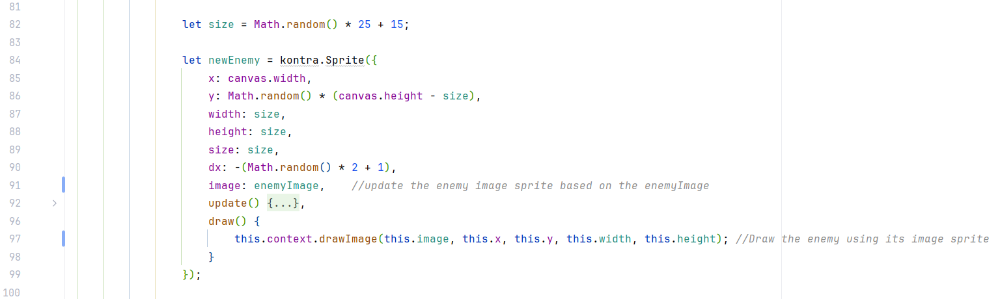
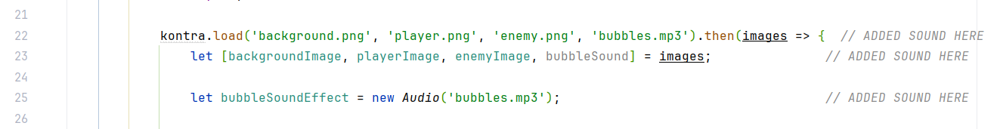
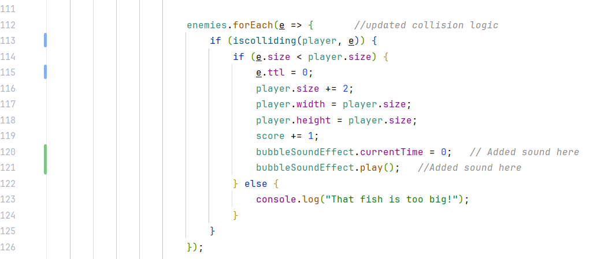

🎯 Objectives
- Replace rectangles with image-based sprites using
kontra.assets. - Increase player size when eating smaller fish.
- Track score using
kontra.Text. - Use size comparisons to determine which fish can be eaten.
- Understand how asset sizes affect performance in game jams.
Step 1: Add Score Tracking with kontra.Text
We will now keep track of how many enemy fish the player eats.
👉 View Step 1 Code🧩 Add this globally
This creates a score variable and a text object that shows the score on screen. It behaves just like a sprite, but displays text instead of an image.
🔄 Update in the Game Loop (update())
scoreText.text = 'Score: ' + score;🎨 Render in render()
scoreText.render();Step 2: Player and Enemy Size and Growth
👉 View Step 2 CodeNow we will let the player grow whenever they successfully eat a smaller fish. This makes the game feel exciting and rewarding.
You should only eat fish that are smaller than you. This steps give random size to every enemy
Step 3: Updating Collision Logic and Checking Score
👉 View Step 3 CodeThis part of the code checks every enemy fish to see if it touches the player fish. If the enemy is smaller than the player, the enemy is removed, the player grows bigger, and the score increases.
Step 4: Replace Rectangles with Sprite Image
Let's make the game look more realistic by replacing rectangles with actual fish PNGs.
👉 View Step 4 Code📥 Load images using kontra.load

🐡 Enemy Sprite Example, We will need to update both the image variable as well as the draw function
Update the enemy object to include image: enemyImage and adjust the draw function to use
the
sprite image instead of a rectangle.
Step 5: Add Sound Effects
We will add a bubble sound when the player eats a fish. This makes the game feel more alive.
👉 View Step 5 Code🎵 Load sound file
🎧 Play sound when enemy is eaten
If the player is bigger than the enemy, the bubble sound effect plays and the enemy is removed.
🏁 Final Result
The player can now:
- Eat smaller fish
- Grow in size
- Use image-based sprites
- Hear sound effects
- Earn and display score